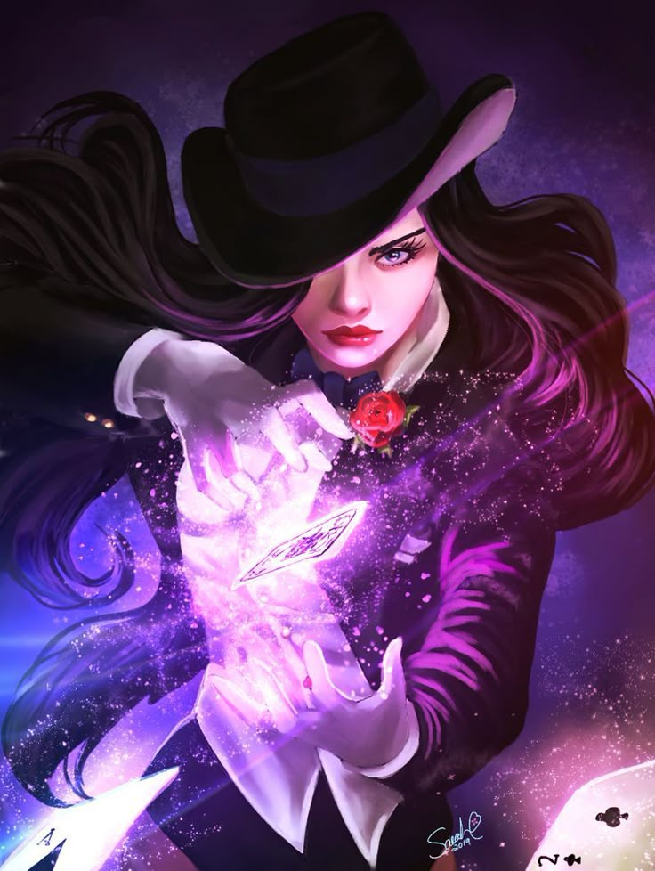

|  | BIOGRAFIA |
|---|---|
|
Zatanna é uma das maiores mágicas do Universo, filha do famoso mago Giovanni Zatara.
Cresceu entre palcos e magia real, dominando tanto truques de ilusionismo quanto feitiços verdadeiros.
Após a misteriosa perda de seu pai, ela passou a atuar como heroína, usando seus poderes para
investigar o oculto, combater criaturas sobrenaturais e proteger o mundo de ameaças mágicas. Carismática,
confiante e talentosa, Zatanna equilibra a vida de palco com a de protetora do mundo místico. | |
| ARMAS | |
|
Varinha ou Cartas de Show: Usa objetos de palco como ferramentas para canalizar magia. Não são armas tradicionais, mas ampliam sua precisão em feitiços. Magia Reversa: Zatanna conjura magia falando comandos de trás para frente. Com isso, pode criar, destruir, curar, controlar e alterar quase tudo ao seu redor. | |
| Habilidades | |
|
Manipulação de Realidade: Pode afetar elementos do mundo de forma direta: mover objetos, criar barreiras, lançar explosões mágicas. Feitiços de Controle: Capaz de paralisar inimigos, fazer ilusões, criar silêncio, teleporte e outros efeitos úteis. Versatilidade Arcana: Sua magia cobre praticamente qualquer situação — desde cura até defesa, ataque ou suporte. |